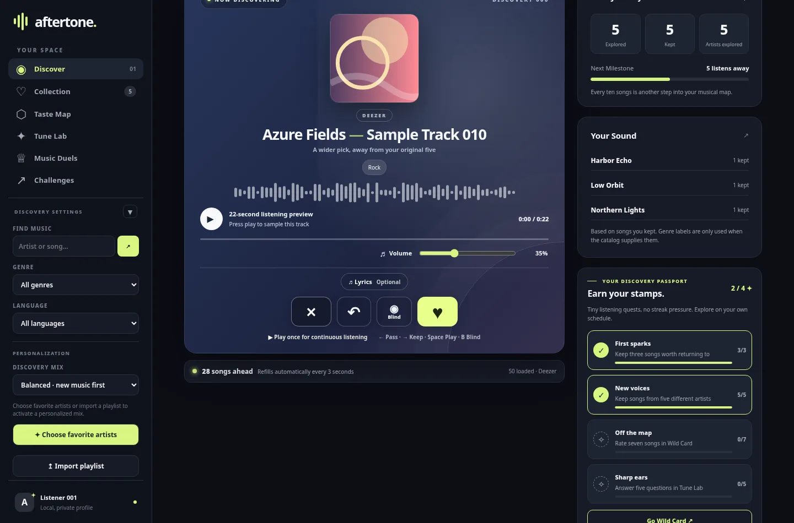
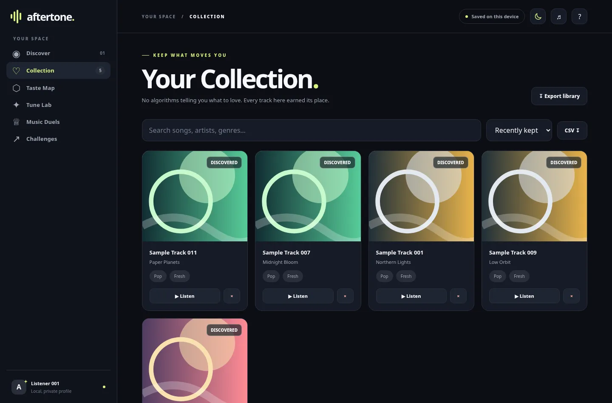
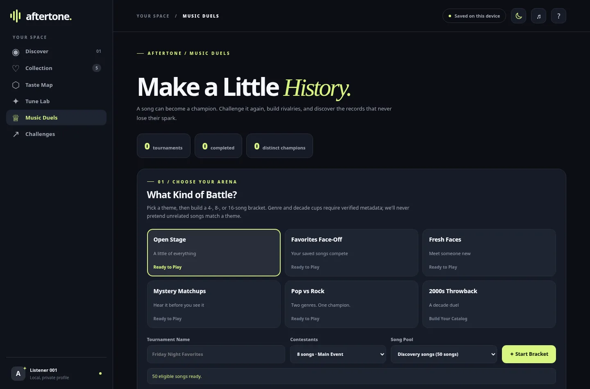

Personalized Listening Paths
Comfort Zone, New Territory, and Wild Card each approach discovery differently.
AN INTERACTIVE MUSIC DISCOVERY PROJECT
Your next favorite song probably isn't in your usual rotation. AFTERTONE makes discovering it feel like an adventure.

Great music discovery is about getting outside the loop. Search for artists you love, try a completely different direction, or give chance a turn at the controls.
Start discoveringStart wherever feels right. You can always change direction.
More of what you already love, with room for pleasant surprises.
Unfamiliar artists, unexpected sounds, and new favorites.
Skip the plan. Just press play and see where you land.
Put two tracks head to head, pick your winners, and build a Hall of Fame.
Beyond the homepage, there's a working music discovery game to explore.

Your favorites stay in your browser, ready for your next session.

Create brackets, choose the winners, and revisit your tournament history.
AFTERTONE is a full music discovery portfolio project, with real product logic behind the interface.
Explore the sourceComfort Zone, New Territory, and Wild Card each approach discovery differently.
Real catalog discovery and short music previews, dependent on third-party availability.
Local collections, tournaments, and listening decisions that persist in the browser.
Automated tests, GitHub Pages deployment, and a roadmap of new features.
AFTERTONE is an independent portfolio project, not a commercial streaming platform. It is not affiliated with or endorsed by Deezer. Third-party music metadata, artwork, and short previews belong to their rights holders and may be unavailable depending on the provider or browser. A portfolio notice does not grant rights to use third-party media. Favorites and game progress are saved locally in your browser; no account is required.
Real tracks. Your taste. A whole lot of possibilities.